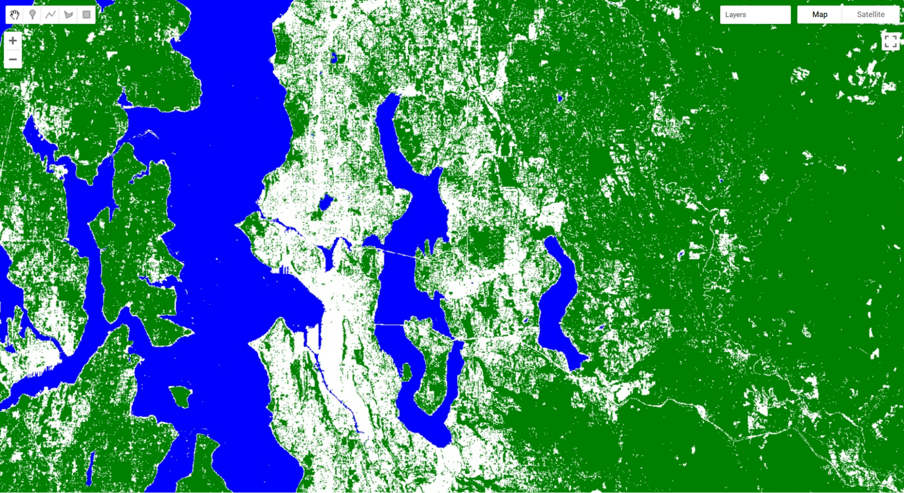
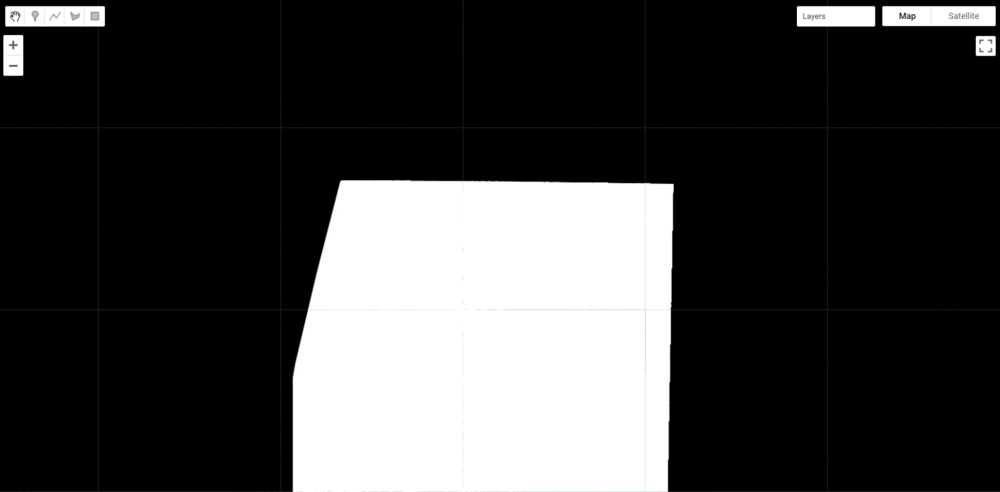
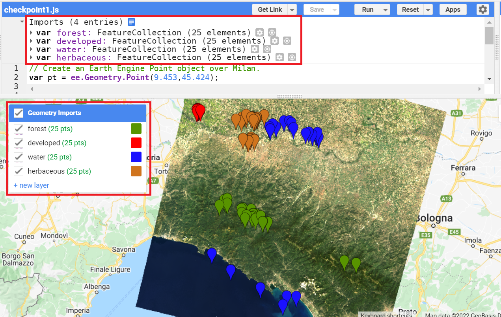
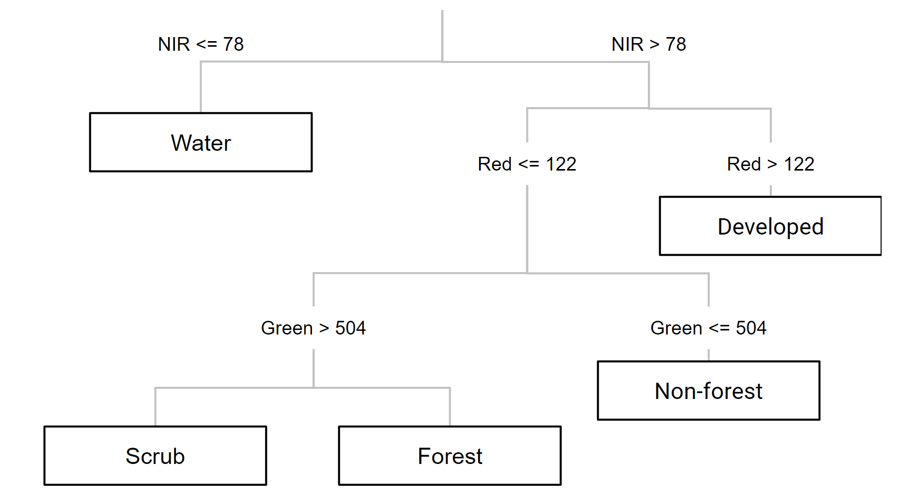
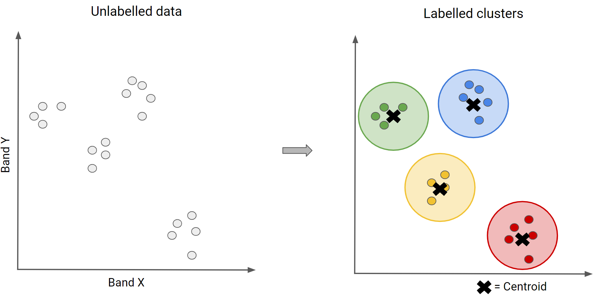

Interpreting Images
Now that you know how images are viewed and what kinds of images exist in Earth Engine, how do we manipulate them? To gain the skills of interpreting images, you’ll work with bands, combining values to form indices and masking unwanted pixels. Then, you’ll learn some of the techniques available in Earth Engine for classifying images and interpreting the results.
Image Manipulation: Bands, Arithmetic, Thresholds, and Masks
Overview
Once images have been identified in Earth Engine, they can be viewed in a wide array of band combinations for targeted purposes. For users who are already versed in remote sensing concepts, this chapter shows how to do familiar tasks on this platform; for those who are entirely new to such concepts, it introduces the idea of band combinations.
Learning Outcomes
- Understanding what spectral indices are and why they are useful.
- Being introduced to a range of example spectral indices used for a variety of purposes.
Assumes you know how to:
- Import images and image collections, filter, and visualize (Part F1).
Introduction
Spectral indices are based on the fact that different objects and land covers on the Earth’s surface reflect different amounts of light from the Sun at different wavelengths. In the visible part of the spectrum, for example, a healthy green plant reflects a large amount of green light while absorbing blue and red light — which is why it appears green to our eyes. Light also arrives from the Sun at wavelengths outside what the human eye can see, and there are large differences in reflectances between living and nonliving land covers, and between different types of vegetation, both in the visible and outside the visible wavelengths. We visualized this earlier, in Chaps. F1.1 and F1.3 when we mapped color-infrared images (Fig. F2.0.1).

If we graph the amount of light (reflectance) at different wavelengths that an object or land cover reflects, we can visualize this more easily (Fig. F2.0.2). For example, look at the reflectance curves for soil and water in the graph below. Soil and water both have relatively low reflectance at wavelengths around 300 nm (ultraviolet and violet light). Conversely, at wavelengths above 700 nm (red and infrared light) soil has relatively high reflectance, while water has very low reflectance. Vegetation, meanwhile, generally reflects large amounts of near infrared light, relative to other land covers.

Spectral indices use math to express how objects reflect light across multiple portions of the spectrum as a single number. Indices combine multiple bands, often with simple operations of subtraction and division, to create a single value across an image that is intended to help to distinguish particular land uses or land covers of interest. Using Fig. F2.0.2, you can imagine which wavelengths might be the most informative for distinguishing among a variety of land covers. We will explore a variety of calculations made from combinations of bands in the following sections.
Indices derived from satellite imagery are used as the basis of many remote-sensing analyses. Indices have been used in thousands of applications, from detecting anthropogenic deforestation to examining crop health. For example, the growth of economically important crops such as wheat and cotton can be monitored throughout the growing season: Bare soil reflects more red wavelengths, whereas growing crops reflect more of the near-infrared (NIR) wavelengths. Thus, calculating a ratio of these two bands can help monitor how well crops are growing (Jackson and Huete 1991).
Band Arithmetic in Earth Engine
If you have not already done so, be sure to add the book’s code repository to the Code Editor by entering https://code.earthengine.google.com/?accept_repo=projects/gee-edu/book into your browser. The book’s scripts will then be available in the script manager panel. If you have trouble finding the repo, you can visit this link for help.
Many indices can be calculated using band arithmetic in Earth Engine. Band arithmetic is the process of adding, subtracting, multiplying, or dividing two or more bands from an image. Here we’ll first do this manually, and then show you some more efficient ways to perform band arithmetic in Earth Engine.
Arithmetic Calculation of NDVI
The red and near-infrared bands provide a lot of information about vegetation due to vegetation’s high reflectance in these wavelengths. Take a look at Fig. F2.0.2 and note, in particular, that vegetation curves (graphed in green) have relatively high reflectance in the NIR range (approximately 750–900 nm). Also note that vegetation has low reflectance in the red range (approximately 630–690 nm), where sunlight is absorbed by chlorophyll. This suggests that if the red and near-infrared bands could be combined, they would provide substantial information about vegetation.
Soon after the launch of Landsat 1 in 1972, analysts worked to devise a robust single value that would convey the health of vegetation along a scale of −1 to 1. This yielded the NDVI, using the formula:
(F2.0.1)
where NIR and red refer to the brightness of each of those two bands. As seen in Chaps. F1.1 and F1.2, this brightness might be conveyed in units of reflectance, radiance, or digital number (DN); the NDVI is intended to give nearly equivalent values across platforms that use these wavelengths. The general form of this equation is called a “normalized difference”—the numerator is the “difference” and the denominator “normalizes” the value. Outputs for NDVI vary between −1 and 1. High amounts of green vegetation have values around 0.8–0.9. Absence of green leaves gives values near 0, and water gives values near −1.
To compute the NDVI, we will introduce Earth Engine’s implementation of band arithmetic. Cloud-based band arithmetic is one of the most powerful aspects of Earth Engine, because the platform’s computers are optimized for this type of heavy processing. Arithmetic on bands can be done even at planetary scale very quickly—an idea that was out of reach before the advent of cloud-based remote sensing. Earth Engine automatically partitions calculations across a large number of computers as needed, and assembles the answer for display.
As an example, let’s examine an image of San Francisco (Fig. F2.0.3).
/////
// Band Arithmetic
/////
// Calculate NDVI using Sentinel 2
// Import and filter imagery by location and date.
var sfoPoint = ee.Geometry.Point(-122.3774, 37.6194);
var sfoImage = ee.ImageCollection('COPERNICUS/S2')
.filterBounds(sfoPoint)
.filterDate('2020-02-01', '2020-04-01')
.first();
// Display the image as a false color composite.
Map.centerObject(sfoImage, 11);
Map.addLayer(sfoImage, {
bands: ['B8', 'B4', 'B3'],
min: 0,
max: 2000}, 'False color');

The simplest mathematical operations in Earth Engine are the add, subtract, multiply, and divide methods. Let’s select the near-infrared and red bands and use these operations to calculate NDVI for our image.
// Extract the near infrared and red bands.
var nir = sfoImage.select('B8');
var red = sfoImage.select('B4');
// Calculate the numerator and the denominator using subtraction and addition respectively.
var numerator = nir.subtract(red);
var denominator = nir.add(red);
// Now calculate NDVI.
var ndvi = numerator.divide(denominator);
// Add the layer to our map with a palette.
var vegPalette = ['red', 'white', 'green'];
Map.addLayer(ndvi, {
min: -1,
max: 1,
palette: vegPalette
}, 'NDVI Manual');
Examine the resulting index, using the Inspector to pick out pixel values in areas of vegetation and non-vegetation if desired.

Using these simple arithmetic tools, you can build almost any index, or develop and visualize your own. Earth Engine allows you to quickly and easily calculate and display the index across a large area.
Single-Operation Computation of Normalized Difference for NDVI
Normalized differences like NDVI are so common in remote sensing that Earth Engine provides the ability to do that particular sequence of subtraction, addition, and division in a single step, using the normalizedDifference method. This method takes an input image, along with bands you specify, and creates a normalized difference of those two bands. The NDVI computation previously created with band arithmetic can be replaced with one line of code:
// Now use the built-in normalizedDifference function to achieve the same outcome.
var ndviND = sfoImage.normalizedDifference(['B8', 'B4']);
Map.addLayer(ndviND, {
min: -1,
max: 1,
palette: vegPalette
}, 'NDVI normalizedDiff');
Note that the order in which you provide the two bands to normalizedDifference is important. We use B8, the near-infrared band, as the first parameter, and the red band B4 as the second. If your two computations of NDVI do not look identical when drawn to the screen, check to make sure that the order you have for the NIR and red bands is correct.
Using Normalized Difference for NDWI
As mentioned, the normalized difference approach is used for many different indices. Let’s apply the same normalizedDifference method to another index.
The Normalized Difference Water Index (NDWI) was developed by Gao (1996) as an index of vegetation water content. The index is sensitive to changes in the liquid content of vegetation canopies. This means that the index can be used, for example, to detect vegetation experiencing drought conditions or differentiate crop irrigation levels. In dry areas, crops that are irrigated can be differentiated from natural vegetation. It is also sometimes called the Normalized Difference Moisture Index (NDMI). NDWI is formulated as follows:

where NIR is near-infrared, centered near 860 nm (0.86 μm), and SWIR is short-wave infrared, centered near 1,240 nm (1.24 μm).
Compute and display NDWI in Earth Engine using the normalizedDifference method. Remember that for Sentinel-2, B8 is the NIR band and B11 is the SWIR band (refer to Chaps. F1.1 and F1.3 to find information about imagery bands).
// Use normalizedDifference to calculate NDWI
var ndwi = sfoImage.normalizedDifference(['B8', 'B11']);
var waterPalette = ['white', 'blue'];
Map.addLayer(ndwi, {
min: -0.5,
max: 1,
palette: waterPalette
}, 'NDWI');
Examine the areas of the map that NDVI identified as having a lot of vegetation. Notice which are more blue. This is vegetation that has higher water content.

Code Checkpoint F20a. The book’s repository contains a script that shows what your code should look like at this point.
Thresholding, Masking, and Remapping Images
The previous section in this chapter discussed how to use band arithmetic to manipulate images. Those methods created new continuous values by combining bands within an image. This section uses logical operators to categorize band or index values to create a categorized image.
Implementing a Threshold
Implementing a threshold uses a number (the threshold value) and logical operators to help us partition the variability of images into categories. For example, recall our map of NDVI. High amounts of vegetation have NDVI values near 1 and non-vegetated areas are near 0. If we want to see what areas of the map have vegetation, we can use a threshold to generalize the NDVI value in each pixel as being either “no vegetation” or “vegetation”. That is a substantial simplification, to be sure, but can help us to better comprehend the rich variation on the Earth’s surface. This type of categorization may be useful if, for example, we want to look at the proportion of a city that is vegetated. Let’s create a Sentinel-2 map of NDVI near Seattle, Washington, USA. Enter the code below in a new script.
// Create an NDVI image using Sentinel 2.
var seaPoint = ee.Geometry.Point(-122.2040, 47.6221);
var seaImage = ee.ImageCollection('COPERNICUS/S2')
.filterBounds(seaPoint)
.filterDate('2020-08-15', '2020-10-01')
.first();
var seaNDVI = seaImage.normalizedDifference(['B8', 'B4']);
// And map it.
Map.centerObject(seaPoint, 10);
var vegPalette = ['red', 'white', 'green'];
Map.addLayer(seaNDVI,
{
min: -1,
max: 1,
palette: vegPalette
}, 'NDVI Seattle');

Inspect the image. We can see that vegetated areas are darker green while non-vegetated locations are white and water is pink. If we use the Inspector to query our image, we can see that parks and other forested areas have an NDVI over about 0.5. Thus, it would make sense to define areas with NDVI values greater than 0.5 as forested, and those below that threshold as not forested.
Now let’s define that value as a threshold and use it to threshold our vegetated areas.
// Implement a threshold.
var seaVeg = seaNDVI.gt(0.5);
// Map the threshold.
Map.addLayer(seaVeg,
{
min: 0,
max: 1,
palette: ['white', 'green']
}, 'Non-forest vs. Forest');
The gt method is from the family of Boolean operators — that is, gt is a function that performs a test in each pixel and returns the value 1 if the test evaluates to true, and 0 otherwise. Here, for every pixel in the image, it tests whether the NDVI value is greater than 0.5. When this condition is met, the layer seaVeg gets the value 1. When the condition is false, it receives the value 0.

Use the Inspector tool to explore this new layer. If you click on a green location, that NDVI should be greater than 0.5. If you click on a white pixel, the NDVI value should be equal to or less than 0.5.
Other operators in this Boolean family include less than (lt), less than or equal to (lte), equal to (eq), not equal to (neq), and greater than or equal to (gte) and more.
Building Complex Categorizations with .where
A binary map classifying NDVI is very useful. However, there are situations where you may want to split your image into more than two bins. Earth Engine provides a tool, the where method, that conditionally evaluates to true or false within each pixel depending on the outcome of a test. This is analogous to an if statement seen commonly in other languages. However, to perform this logic when programming for Earth Engine, we avoid using the JavaScript if statement. Importantly, JavaScript if commands are not calculated on Google’s servers, and can create serious problems when running your code — in effect, the servers try to ship all of the information to be executed to your own computer’s browser, which is very underequipped for such enormous tasks. Instead, we use the where clause for conditional logic.
Suppose instead of just splitting the forested areas from the non-forested areas in our NDVI, we want to split the image into likely water, non-forested and forested areas. We can use where and thresholds of -0.1 and 0.5. We will start by creating an image using ee.Image. We then clip the new image so that it covers the same area as our seaNDVI layer.
// Implement .where.
// Create a starting image with all values = 1.
var seaWhere = ee.Image(1) // Use clip to constrain the size of the new image. .clip(seaNDVI.geometry());
// Make all NDVI values less than -0.1 equal 0.
seaWhere = seaWhere.where(seaNDVI.lte(-0.1), 0);
// Make all NDVI values greater than 0.5 equal 2.
seaWhere = seaWhere.where(seaNDVI.gte(0.5), 2);
// Map our layer that has been divided into three classes.
Map.addLayer(seaWhere,
{
min: 0,
max: 2,
palette: ['blue', 'white', 'green']
}, 'Water, Non-forest, Forest');
There are a few interesting things to note about this code that you may not have seen before. First, we’re not defining a new variable for each where call. As a result, we can perform many where calls without creating a new variable each time and needing to keep track of them. Second, when we created the starting image, we set the value to 1. This means that we could easily set the bottom and top values with one where clause each. Finally, while we did not do it here, we can combine multiple where clauses using and and or. For example, we could identify pixels with an intermediate level of NDVI using seaNDVI.gte(-0.1).and(seaNDVI.lt(0.5)).

Masking Specific Values in an Image
Masking an image is a technique that removes specific areas of an image — those covered by the mask — from being displayed or analyzed. Earth Engine allows you to both view the current mask and update the mask.
// Implement masking.
// View the seaVeg layer's current mask.
Map.centerObject(seaPoint, 9);
Map.addLayer(seaVeg.mask(), {}, 'seaVeg Mask');

You can use the Inspector to see that the black area is masked and the white area has a constant value of 1. This means that data values are mapped and available for analysis within the white area only.
Now suppose we only want to display and conduct analyses in the forested areas. Let’s mask out the non-forested areas from our image. First, we create a binary mask using the equals (eq) method.
// Create a binary mask of non-forest.
var vegMask = seaVeg.eq(1);
In making a mask, you set the values you want to see and analyze to be a number greater than 0. The idea is to set unwanted values to get the value of 0. Pixels that had 0 values become masked out (in practice, they do not appear on the screen at all) once we use the updateMask method to add these values to the existing mask.
// Update the seaVeg mask with the non-forest mask.
var maskedVeg = seaVeg.updateMask(vegMask);
// Map the updated Veg layer
Map.addLayer(maskedVeg,
{
min: 0,
max: 1,
palette: ['green']
}, 'Masked Forest Layer');
Turn off all of the other layers. You can see how the maskedVeg layer now has masked out all non-forested areas.

Map the updated mask for the layer and you can see why this is.
// Map the updated mask
Map.addLayer(maskedVeg.mask(), {}, 'maskedVeg Mask');

Remapping Values in an Image
Remapping takes specific values in an image and assigns them a different value. This is particularly useful for categorical datasets, including those you read about in Chap. F1.2 and those we have created earlier in this chapter.
Let’s use the remap method to change the values for our seaWhere layer. Note that since we’re changing the middle value to be the largest, we’ll need to adjust our palette as well.
// Implement remapping.
// Remap the values from the seaWhere layer.
var seaRemap = seaWhere.remap([0, 1, 2], // Existing values. [9, 11, 10]); // Remapped values.
Map.addLayer(seaRemap,
{
min: 9,
max: 11,
palette: ['blue', 'green', 'white']
}, 'Remapped Values');
Use the inspector to compare values between our original seaWhere (displayed as Water, Non-Forest, Forest) and the seaRemap, marked as “Remapped Values.” Click on a forested area and you should see that the Remapped Values should be 10, instead of 2 (Fig. F2.0.12).

Code Checkpoint F20b. The book’s repository contains a script that shows what your code should look like at this point.
Conclusion
In this chapter, you learned how to select multiple bands from an image and calculate indices. You also learned about thresholding values in an image, slicing them into multiple categories using thresholds. It is also possible to work with one set of class numbers and remap them quickly to another set. Using these techniques, you have some of the basic tools of image manipulation. In subsequent chapters you will encounter more complex and specialized image manipulation techniques, including pixel-based image transformations (Chap. F3.1), neighborhood-based image transformations (Chap. F3.2), and object-based image analysis (Chap. F3.3).
References
Baig MHA, Zhang L, Shuai T, Tong Q (2014) Derivation of a tasselled cap transformation based on Landsat 8 at-satellite reflectance. Remote Sens Lett 5:423–431. https://doi.org/10.1080/2150704X.2014.915434
Crist EP (1985) A TM tasseled cap equivalent transformation for reflectance factor data. Remote Sens Environ 17:301–306. https://doi.org/10.1016/0034-4257(85)90102-6
Drury SA (1987) Image interpretation in geology. Geocarto Int 2:48. https://doi.org/10.1080/10106048709354098
Gao BC (1996) NDWI - A normalized difference water index for remote sensing of vegetation liquid water from space. Remote Sens Environ 58:257–266. https://doi.org/10.1016/S0034-4257(96)00067-3
Huang C, Wylie B, Yang L, et al (2002) Derivation of a tasselled cap transformation based on Landsat 7 at-satellite reflectance. Int J Remote Sens 23:1741–1748. https://doi.org/10.1080/01431160110106113
Jackson RD, Huete AR (1991) Interpreting vegetation indices. Prev Vet Med 11:185–200. https://doi.org/10.1016/S0167-5877(05)80004-2
Martín MP (1998) Cartografía e inventario de incendios forestales en la Península Ibérica a partir de imágenes NOAA-AVHRR. Universidad de Alcalá
McFeeters SK (1996) The use of the Normalized Difference Water Index (NDWI) in the delineation of open water features. Int J Remote Sens 17:1425–1432. https://doi.org/10.1080/01431169608948714
Nath B, Niu Z, Mitra AK (2019) Observation of short-term variations in the clay minerals ratio after the 2015 Chile great earthquake (8.3 Mw) using Landsat 8 OLI data. J Earth Syst Sci 128:1–21. https://doi.org/10.1007/s12040-019-1129-2
Schultz M, Clevers JGPW, Carter S, et al (2016) Performance of vegetation indices from Landsat time series in deforestation monitoring. Int J Appl Earth Obs Geoinf 52:318–327. https://doi.org/10.1016/j.jag.2016.06.020
Segal D (1982) Theoretical basis for differentiation of ferric-iron bearing minerals, using Landsat MSS data. In: Proceedings of Symposium for Remote Sensing of Environment, 2nd Thematic Conference on Remote Sensing for Exploratory Geology, Fort Worth, TX. pp 949–951
Souza Jr CM, Roberts DA, Cochrane MA (2005) Combining spectral and spatial information to map canopy damage from selective logging and forest fires. Remote Sens Environ 98:329–343. https://doi.org/10.1016/j.rse.2005.07.013
Souza Jr CM, Siqueira JV, Sales MH, et al (2013) Ten-year Landsat classification of deforestation and forest degradation in the Brazilian Amazon. Remote Sens 5:5493–5513. https://doi.org/10.3390/rs5115493
Interpreting an Image: Classification
Overview
Image classification is a fundamental goal of remote sensing. It takes the user from viewing an image to labeling its contents. This chapter introduces readers to the concept of classification and walks users through the many options for image classification in Earth Engine. You will explore the processes of training data collection, classifier selection, classifier training and image classification.
Learning Outcomes
- Running a classification in Earth Engine.
- Understanding the difference between supervised and unsupervised classification.
- Learning how to use Earth Engine geometry drawing tools.
- Learning how to collect sample data in Earth Engine.
- Learning the basics of the hexadecimal numbering system.
Assumes you know how to:
- Import images and image collections, filter and visualize (Part F1).
- Understand bands and how to select them (Chap. F1.2, Chap. F2.0).
Introduction
Classification is addressed in a broad range of fields, including mathematics, statistics, data mining, machine learning and more. For a deeper treatment of classification, interested readers may see some of the following suggestions: Witten et al. (2011), Hastie et al. (2009), Goodfellow et al. (2016), Gareth et al. (2013), Géron (2019), Müller et al. (2016), or Witten et al. (2005). Unlike regression, which predicts continuous variables, classification predicts categorical, or discrete, variables — those with a finite number of categories (e.g., age range).
In remote sensing, image classification is an attempt to categorize all pixels in an image into a finite number of labeled land cover and/or land use classes. The resulting classified image is a simplified thematic map derived from the original image (Fig. F2.1.1). Land cover and land use information is essential for many environmental and socioeconomic applications, including natural resource management, urban planning, biodiversity conservation, agricultural monitoring and carbon accounting.

Image classification techniques for generating land cover and land use information have been in use since the 1980s (Li et al. 2014). Here, we will cover the concepts of pixel-based supervised and unsupervised classifications, testing out different classifiers. Chapter F3.3 covers the concept and application of object-based classification.
It is important to define land use and land cover. Land cover relates to the physical characteristics of the surface: simply put, it documents whether an area of the Earth’s surface is covered by forests, water, impervious surfaces, etc. Land use refers to how this land is being used by people. For example, herbaceous vegetation is considered a land cover but can indicate different land uses: the grass in a pasture is an agricultural land use, whereas the grass in an urban area can be classified as a park.
Supervised Classification
If you have not already done so, be sure to add the book’s code repository to the Code Editor by entering https://code.earthengine.google.com/?accept_repo=projects/gee-edu/book into your browser. The book’s scripts will then be available in the script manager panel. If you have trouble finding the repo, you can visit this link for help.
Supervised classification uses a training dataset with known labels and representing the spectral characteristics of each land cover class of interest to “supervise” the classification. The overall approach of a supervised classification in Earth Engine is summarized as follows:
- Get a scene.
- Collect training data.
- Select and train a classifier using the training data.
- Classify the image using the selected classifier.
We will begin by creating training data manually, based on a clear Landsat image (Fig. F2.1.2). Copy the code block below to define your Landsat 8 scene variable and add it to the map. We will use a point in Milan, Italy, as the center of the area for our image classification.
// Create an Earth Engine Point object over Milan.
var pt = ee.Geometry.Point([9.453, 45.424]);
// Filter the Landsat 8 collection and select the least cloudy image.
var landsat = ee.ImageCollection('LANDSAT/LC08/C02/T1_L2')
.filterBounds(pt)
.filterDate('2019-01-01', '2020-01-01')
.sort('CLOUD_COVER')
.first();
// Center the map on that image.
Map.centerObject(landsat, 8);
// Add Landsat image to the map.
var visParams = {
bands: ['SR_B4', 'SR_B3', 'SR_B2'],
min: 7000,
max: 12000
};
Map.addLayer(landsat, visParams, 'Landsat 8 image');

Using the Geometry Tools, we will create points on the Landsat image that represent land cover classes of interest to use as our training data. We’ll need to do two things: (1) identify where each land cover occurs on the ground, and (2) label the points with the proper class number. For this exercise, we will use the classes and codes shown below:
- Forest: 0
- Developed: 1
- Water: 2
- Herbaceous: 3
In the Geometry Tools, click on the marker option (Fig. F2.1.3). This will create a point geometry which will show up as an import named “geometry”. Click on the gear icon to configure this import.

We will start by collecting forest points, so name the import forest. Import it as a FeatureCollection, and then click + Property. Name the new property “class” and give it a value of 0 (Fig. F2.1.4). We can also choose a color to represent this class. For a forest class, it is natural to choose a green color. You can choose the color you prefer by clicking on it, or, for more control, you can use a hexadecimal value.
Hexadecimal values are used throughout the digital world to represent specific colors across computers and operating systems. They are specified by six values arranged in three pairs, with one pair each for the red, green and blue brightness values. If you’re unfamiliar with hexadecimal values, imagine for a moment that colors were specified in pairs of base 10 numbers instead of pairs of base 16. In that case, a bright pure red value would be “990000”; a bright pure green value would be “009900”; and a bright pure blue value would be “000099”. A value like “501263” would be a mixture of the three colors, not especially bright, having roughly equal amounts of blue and red, and much less green: a color that would be a shade of purple. To create numbers in the hexadecimal system, which might feel entirely natural if humans had evolved to have 16 fingers, sixteen “digits” are needed: a base 16 counter goes 0, 1, 2, 3, 4, 5, 6, 7, 8, 9, A, B, C, D, E, F, then 10, 11, and so on. Given that counting framework, the number “FF” is like “99” in base 10: the largest two-digit number. The hexadecimal color used for coloring the letters of the word FeatureCollection in this book, a color with roughly equal amounts of blue and red and much less green, is “7F1FA2”
Returning to the coloring of the forest points, the hexadecimal value “589400” is a little bit of red, about twice as much green and no blue: the deep green seen in Figure F2.1.4. Enter that value, with or without the “#” in front, and click OK after finishing the configuration.

Now, in the Geometry Imports, we will see that the import has been renamed forest. Click on it to activate the drawing mode (Fig. F2.1.5) in order to start collecting forest points.

Now, start collecting points over forested areas (Fig. F2.1.6). Zoom in and out as needed. You can use the satellite basemap to assist you, but the basis of your collection should be the Landsat image. Remember that the more points you collect, the more the classifier will learn from the information you provide. For now, let’s set a goal to collect 25 points per class. Click Exit next to Point drawing (Fig. F2.1.5) when finished.

Repeat the same process for the other classes by creating new layers (Fig. F2.1.7). Don’t forget to import using the FeatureCollection option as mentioned above. For the developed class, collect points over urban areas. For the water class, collect points over the Ligurian Sea, and also look for other bodies of water, like rivers. For the herbaceous class, collect points over agricultural fields. Remember to set the “class” property for each class to its corresponding code (see Table 2.1.1) and click Exit once you finalize collecting points for each class as mentioned above. We will be using the following hexadecimal colors for the other classes: #FF0000 for developed, #1A11FF for water, and #D0741E for herbaceous.

You should now have four FeatureCollection imports named forest, developed, water, and herbaceous (Fig. F2.1.8).

Code Checkpoint F21a. The book’s repository contains a script that shows what your code should look like at this point.
If you wish to have the exact same results demonstrated in this chapter from now on, continue beginning with this Code Checkpoint. If you use the points collected yourself, the results may vary from this point forward.
The next step is to combine all the training feature collections into one. Copy and paste the code below to combine them into one FeatureCollection called trainingFeatures. Here, we use the flatten method to avoid having a collection of feature collections — we want individual features within our FeatureCollection.
// Combine training feature collections.
var trainingFeatures = ee.FeatureCollection([
forest, developed, water, herbaceous
]).flatten();
Note: Alternatively, you could use an existing set of reference data. For example, the European Space Agency (ESA) WorldCover dataset is a global map of land use and land cover derived from ESA’s Sentinel-2 imagery at 10 m resolution. With existing datasets, we can randomly place points on pixels classified as the classes of interest (if you are curious, you can explore the Earth Engine documentation to learn about the ee.Image.stratifiedSample and the ee.FeatureCollection.randomPoints methods). The drawback is that these global datasets will not always contain the specific classes of interest for your region, or may not be entirely accurate at the local scale. Another option is to use samples that were collected in the field (e.g., GPS points). In Chap. F5.0, you will see how to upload your own data as Earth Engine assets.
In the combined FeatureCollection, each Feature point should have a property called “class”. The class values are consecutive integers from 0 to 3 (you could verify that this is true by printing trainingFeatures and checking the properties of the features).
Now that we have our training points, copy and paste the code below to extract the band information for each class at each point location. First, we define the prediction bands to extract different spectral and thermal information from different bands for each class. Then, we use the sampleRegions method to sample the information from the Landsat image at each point location. This method requires information about the FeatureCollection (our reference points), the property to extract (“class”), and the pixel scale (in meters).
// Define prediction bands.
var predictionBands = [ 'SR_B1', 'SR_B2', 'SR_B3', 'SR_B4', 'SR_B5', 'SR_B6', 'SR_B7', 'ST_B10'
];
// Sample training points.
var classifierTraining = landsat.select(predictionBands)
.sampleRegions({
collection: trainingFeatures,
properties: ['class'],
scale: 30 });
You can check whether the classifierTraining object extracted the properties of interest by printing it and expanding the first feature. You should see the band and class information (Fig. F2.1.9).

Now we can choose a classifier. The choice of classifier is not always obvious, and there are many options from which to pick — you can quickly expand the ee.Classifier object under Docs to get an idea of how many options we have for image classification. Therefore, we will be testing different classifiers and comparing their results. We will start with a Classification and Regression Tree (CART) classifier, a well-known classification algorithm (Fig. F2.1.10) that has been around for decades.

Copy and paste the code below to instantiate a CART classifier (ee.Classifier.smileCart) and train it.
//////////////// CART Classifier ///////////////////
// Train a CART Classifier.
var classifier = ee.Classifier.smileCart().train({
features: classifierTraining,
classProperty: 'class',
inputProperties: predictionBands
});
Essentially, the classifier contains the mathematical rules that link labels to spectral information. If you print the variable classifier and expand its properties, you can confirm the basic characteristics of the object (bands, properties, and classifier being used). If you print classifier.explain, you can find a property called “tree” that contains the decision rules.
After training the classifier, copy and paste the code below to classify the Landsat image and add it to the Map.
// Classify the Landsat image.
var classified = landsat.select(predictionBands).classify(classifier);
// Define classification image visualization parameters.
var classificationVis = {
min: 0,
max: 3,
palette: ['589400', 'ff0000', '1a11ff', 'd0741e']
};
// Add the classified image to the map.
Map.addLayer(classified, classificationVis, 'CART classified');
Note that, in the visualization parameters, we define a palette parameter which in this case represents colors for each pixel value (0–3, our class codes). We use the same hexadecimal colors used when creating our training points for each class. This way, we can associate a color with a class when visualizing the classified image in the Map.
Inspect the result: Activate the Landsat composite layer and the satellite basemap to overlay with the classified images (Fig. F2.1.11). Change the layers’ transparency to inspect some areas. What do you notice? The result might not look very satisfactory in some areas (e.g., confusion between developed and herbaceous classes). Why do you think this is happening? There are a few options to handle misclassification errors:
- Collect more training data We can try incorporating more points to have a more representative sample of the classes.
- Tune the model. Classifiers typically have “hyperparameters,” which are set to default values. In the case of classification trees, there are ways to tune the number of leaves in the tree, for example. Tuning models is addressed in Chap. F2.2.
- Try other classifiers. If a classifier’s results are unsatisfying, we can try some of the other classifiers in Earth Engine to see if the result is better or different.
- Expand the collection location. It is good practice to collect points across the entire image and not just focus on one location. Also, look for pixels of the same class that show variability (e.g., for the developed class, building rooftops look different than house rooftops; for the herbaceous class, crop fields show distinctive seasonality/phenology).
- Add more predictors. We can try adding spectral indices to the input variables; this way, we are feeding the classifier new, unique information about each class. For example, there is a good chance that a vegetation index specialized for detecting vegetation health (e.g., NDVI) would improve the developed versus herbaceous classification.

For now, we will try another supervised learning classifier that is widely used: Random Forests (RF). The RF algorithm (Breiman 2001, Pal 2005) builds on the concept of decision trees, but adds strategies to make them more powerful. It is called a “forest” because it operates by constructing a multitude of decision trees. As mentioned previously, a decision tree creates the rules which are used to make decisions. A Random Forest will randomly choose features and make observations, build a forest of decision trees and then use the full set of trees to estimate the class. It is a great choice when you do not have a lot of insight about the training data.

Copy and paste the code below to train the RF classifier (ee.Classifier.smileRandomForest) and apply the classifier to the image. The RF algorithm requires, as its argument, the number of trees to build. We will use 50 trees.
/////////////// Random Forest Classifier /////////////////////
// Train RF classifier.
var RFclassifier = ee.Classifier.smileRandomForest(50).train({
features: classifierTraining,
classProperty: 'class',
inputProperties: predictionBands
});
// Classify Landsat image.
var RFclassified = landsat.select(predictionBands).classify(
RFclassifier);
// Add classified image to the map.
Map.addLayer(RFclassified, classificationVis, 'RF classified');
Note that in the ee.Classifier.smileRandomForest documentation (Docs tab), there is a seed (random number) parameter. Setting a seed allows you to exactly replicate your model each time you run it. Any number is acceptable as a seed.
Inspect the result (Fig. F2.1.13). How does this classified image differ from the CART one? Is the classifications better or worse? Zoom in and out and change the transparency of layers as needed. In Chap. F2.2, you will see more systematic ways to assess what is better or worse, based on accuracy metrics.

Code Checkpoint F21b. The book’s repository contains a script that shows what your code should look like at this point.
Unsupervised Classification
In an unsupervised classification, we have the opposite process of supervised classification. Spectral classes are grouped first and then categorized into clusters. Therefore, in Earth Engine, these classifiers are ee.Clusterer objects. They are “self-taught” algorithms that do not use a set of labeled training data (i.e., they are “unsupervised”). You can think of it as performing a task that you have not experienced before, starting by gathering as much information as possible. For example, imagine learning a new language without knowing the basic grammar, learning only by watching a TV series in that language, listening to examples and finding patterns.
Similar to the supervised classification, unsupervised classification in Earth Engine has this workflow:
- Assemble features with numeric properties in which to find clusters (training data).
- Select and instantiate a clusterer.
- Train the clusterer with the training data.
- Apply the clusterer to the scene (classification).
- Label the clusters.
In order to generate training data, we will use the sample method, which randomly takes samples from a region (unlike sampleRegions, which takes samples from predefined locations). We will use the image’s footprint as the region by calling the geometry method. Additionally, we will define the number of pixels (numPixels) to sample — in this case, 1000 pixels — and define a tileScale of 8 to avoid computation errors due to the size of the region. Copy and paste the code below to sample 1000 pixels from the Landsat image. You should add to the same script as before to compare supervised versus unsupervised classification results at the end.
//////////////// Unsupervised classification ////////////////
// Make the training dataset.
var training = landsat.sample({
region: landsat.geometry(),
scale: 30,
numPixels: 1000,
tileScale: 8
});
Now we can instantiate a clusterer and train it. As with the supervised algorithms, there are many unsupervised algorithms to choose from. We will use the k-means clustering algorithm, which is a commonly used approach in remote sensing. This algorithm identifies groups of pixels near each other in the spectral space (image x bands) by using an iterative regrouping strategy. We define a number of clusters, k, and then the method randomly distributes that number of seed points into the spectral space. A large sample of pixels is then grouped into its closest seed, and the mean spectral value of this group is calculated. That mean value is akin to a center of mass of the points, and is known as the centroid. Each iteration recalculates the class means and reclassifies pixels with respect to the new means. This process is repeated until the centroids remain relatively stable and only a few pixels change from class to class on subsequent iterations.

Copy and paste the code below to request four clusters, the same number as for the supervised classification, in order to directly compare them.
// Instantiate the clusterer and train it.
var clusterer = ee.Clusterer.wekaKMeans(4).train(training);
Now copy and paste the code below to apply the clusterer to the image and add the resulting classification to the Map (Fig. F2.1.15). Note that we are using a method called randomVisualizer to assign colors for the visualization. We are not associating the unsupervised classes with the color palette we defined earlier in the supervised classification. Instead, we are assigning random colors to the classes, since we do not yet know which of the unsupervised classes best corresponds to each of the named classes (e.g., forest , herbaceous). Note that the colors in Fig. F1.2.15 might not be the same as you see on your Map, since they are assigned randomly.
// Cluster the input using the trained clusterer.
var Kclassified = landsat.cluster(clusterer);
// Display the clusters with random colors.
Map.addLayer(Kclassified.randomVisualizer(), {}, 'K-means classified - random colors');

Inspect the results. How does this classification compare to the previous ones? If preferred, use the Inspector to check which classes were assigned to each pixel value (“cluster” band) and change the last line of your code to apply the same palette used for the supervised classification results (see Code Checkpoint below for an example).
Another key point of classification is the accuracy assessment of the results. This will be covered in Chap. F2.2.
Code Checkpoint F21c. The book’s repository contains a script that shows what your code should look like at this point.
Conclusion
Classification algorithms are key for many different applications because they allow you to predict categorical variables. You should now understand the difference between supervised and unsupervised classification and have the basic knowledge on how to handle misclassifications. By being able to map the landscape for land use and land cover, we will also be able to monitor how it changes (Part F4).
References
Breiman L (2001) Random forests. Mach Learn 45:5–32. https://doi.org/10.1023/A:1010933404324
Gareth J, Witten D, Hastie T, Tibshirani R (2013) An Introduction to Statistical Learning. Springer
Géron A (2019) Hands-on Machine Learning with Scikit-Learn, Keras and TensorFlow: Concepts, Tools, and Techniques to Build Intelligent Systems. O’Reilly Media, Inc.
Goodfellow I, Bengio Y, Courville A (2016) Deep Learning. MIT Press
Hastie T, Tibshirani R, Friedman JH (2009) The Elements of Statistical Learning: Data Mining, Inference, and Prediction. Springer
Li M, Zang S, Zhang B, et al (2014) A review of remote sensing image classification techniques: The role of spatio-contextual information. Eur J Remote Sens 47:389–411. https://doi.org/10.5721/EuJRS20144723
Müller AC, Guido S (2016) Introduction to Machine Learning with Python: A Guide for Data Scientists. O’Reilly Media, Inc.
Pal M (2005) Random forest classifier for remote sensing classification. Int J Remote Sens 26:217–222. https://doi.org/10.1080/01431160412331269698
Witten IH, Frank E, Hall MA, et al (2005) Practical machine learning tools and techniques. In: Data Mining. pp 4
Accuracy Assessment: Quantifying Classification Quality
Overview
This chapter will enable you to assess the accuracy of an image classification. You will learn about different metrics and ways to quantify classification quality in Earth Engine. Upon completion, you should be able to evaluate whether your classification needs improvement and know how to proceed when it does.
Learning Outcomes
- Learning how to perform accuracy assessment in Earth Engine.
- Understanding how to generate and read a confusion matrix.
- Understanding overall accuracy and the kappa coefficient.
- Understanding the difference between user’s and producer’s accuracy, and the difference between omission and commission errors.
Assumes you know how to:
- Create a graph using ui.Chart (Chap. F1.3).
- Perform a supervised Random Forest image classification (Chap. F2.1).
Introduction
Any map or remotely sensed product is a generalization or model that will have inherent errors. Products derived from remotely sensed data used for scientific purposes and policymaking require a quantitative measure of accuracy to strengthen the confidence in the information generated (Foody 2002, Strahler et al. 2006, Olofsson et al. 2014). Accuracy assessment is a crucial part of any classification project, as it measures the degree to which the classification agrees with another data source that is considered to be accurate, ground-truth data (i.e., “reality”).
The history of accuracy assessment reveals increasing detail and rigor in the analysis, moving from a basic visual appraisal of the derived map (Congalton 1994, Foody 2002) to the definition of best practices for sampling and response designs and the calculation of accuracy metrics (Foody 2002, Stehman 2013, Olofsson et al. 2014, Stehman and Foody 2019). The confusion matrix (also called the “error matrix”) (Stehman 1997) summarizes key accuracy metrics used to assess products derived from remotely sensed data.
In Chap. F2.1, we asked whether the classification results were satisfactory. In remote sensing, the quantification of the answer to that question is called accuracy assessment. In the classification context, accuracy measurements are often derived from a confusion matrix.
In a thorough accuracy assessment, we think carefully about the sampling design, the response design, and the analysis (Olofsson et al. 2014). Fundamental protocols are taken into account to produce scientifically rigorous and transparent estimates of accuracy and area, which requires robust planning and time. In a standard setting, we would calculate the number of samples needed for measuring accuracy (sampling design). Here, we will focus mainly on the last step, analysis, by examining the confusion matrix and learning how to calculate the accuracy metrics. This will be done by partitioning the existing data into training and testing sets.
Quantifying Classification Accuracy Through a Confusion Matrix
If you have not already done so, be sure to add the book’s code repository to the Code Editor by entering https://code.earthengine.google.com/?accept_repo=projects/gee-edu/book into your browser. The book’s scripts will then be available in the script manager panel. If you have trouble finding the repo, you can visit this link for help.
To illustrate some of the basic ideas about classification accuracy, we will revisit the data and location of part of Chap. F2.1, where we tested different classifiers and classified a Landsat image of the area around Milan, Italy. We will name this dataset ‘data’. This variable is a FeatureCollection with features containing the “class” values and spectral information of four land cover / land use classes: forest, developed, water, and herbaceous (see Fig. F2.1.8 and Fig. F2.1.9 for a refresher). We will also define a variable, predictionBands, which is a list of bands that will be used for prediction (classification)—the spectral information in the data variable.
Class Values:
- Forest: 0
- Developed: 1
- Water: 2
- Herbaceous: 3
The first step is to partition the set of known values into training and testing sets in order to have something for the classifier to predict over that it has not been shown before (the testing set), mimicking unseen data that the model might see in the future. We add a column of random numbers to our FeatureCollection using the randomColumn method. Then, we filter the features into about 80% for training and 20% for testing using ee.Filter. Copy and paste the code below to partition the data and filter features based on the random number.
// Import the reference dataset.
var data = ee.FeatureCollection( 'projects/gee-book/assets/F2-2/milan_data');
// Define the prediction bands.
var predictionBands = [ 'SR_B1', 'SR_B2', 'SR_B3', 'SR_B4', 'SR_B5', 'SR_B6', 'SR_B7', 'ST_B10', 'ndvi', 'ndwi'
];
// Split the dataset into training and testing sets.
var trainingTesting = data.randomColumn();
var trainingSet = trainingTesting
.filter(ee.Filter.lessThan('random', 0.8));
var testingSet = trainingTesting
.filter(ee.Filter.greaterThanOrEquals('random', 0.8));
Note that randomColumn creates pseudorandom numbers in a deterministic way. This makes it possible to generate a reproducible pseudorandom sequence by defining the seed parameter (Earth Engine uses a seed of 0 by default). In other words, given a starting value (i.e., the seed), randomColumn will always provide the same sequence of pseudorandom numbers.
Copy and paste the code below to train a Random Forest classifier with 50 decision trees using the trainingSet.
// Train the Random Forest Classifier with the trainingSet.
var RFclassifier = ee.Classifier.smileRandomForest(50).train({
features: trainingSet,
classProperty: 'class',
inputProperties: predictionBands
});
Now, let’s discuss what a confusion matrix is. A confusion matrix describes the quality of a classification by comparing the predicted values to the actual values. A simple example is a confusion matrix for a binary classification into the classes “positive” and “negative,” as shown in Table F2.2.1.
Table F2.2.1 Confusion matrix for a binary classification where the classes are “positive” and “negative”
| Actual values | |||
|---|---|---|---|
| Positive | Negative | ||
| Predicted values | Positive | TP (true positive) | FP (false positive) |
| Negative | FN (false negative) | TN (true negative) |
In Table F2.2.1, the columns represent the actual values (the truth), while the rows represent the predictions (the classification). “True positive” (TP) and “true negative” (TN) mean that the classification of a pixel matches the truth (e.g., a water pixel correctly classified as water). “False positive” (FP) and “false negative” (FN) mean that the classification of a pixel does not match the truth (e.g., a non-water pixel incorrectly classified as water).
- TP: classified as positive and the actual class is positive
- FP: classified as positive and the actual class is negative
- FN: classified as negative and the actual class is positive
- TN: classified as negative and the actual class is negative
We can extract some statistical information from a confusion matrix.. Let’s look at an example to make this clearer. Table F2.2.2 is a confusion matrix for a sample of 1,000 pixels for a classifier that identifies whether a pixel is forest (positive) or non-forest (negative), a binary classification.
Table F2.2.2 Confusion matrix for a binary classification where the classes are “positive” (forest) and “negative” (non-forest)
| Actual values | |||
|---|---|---|---|
| Positive | Negative | ||
| Predicted values | Positive | 307 | 18 |
| Negative | 14 | 661 |
In this case, the classifier correctly identified 307 forest pixels, wrongly classified 18 non-forest pixels as forest, correctly identified 661 non-forest pixels, and wrongly classified 14 forest pixels as non-forest. Therefore, the classifier was correct 968 times and wrong 32 times. Let’s calculate the main accuracy metrics for this example.
The overall accuracy tells us what proportion of the reference data was classified correctly, and is calculated as the total number of correctly identified pixels divided by the total number of pixels in the sample.

In this case, the overall accuracy is 96.8%, calculated using ( .
.
Two other important accuracy metrics are the producer’s accuracy and the user’s accuracy, also referred to as the “recall” and the “precision,” respectively. Importantly, these metrics quantify aspects of per-class accuracy.
The producer’s accuracy is the accuracy of the map from the point of view of the map maker (the “producer”), and is calculated as the number of correctly identified pixels of a given class divided by the total number of pixels actually in that class. The producer’s accuracy for a given class tells us the proportion of the pixels in that class that were classified correctly.

In this case, the producer’s accuracy for the forest class is 95.6%, calculated using  ). The producer’s accuracy for the non-forest class is 97.3%, calculated from
). The producer’s accuracy for the non-forest class is 97.3%, calculated from  ).
).
The user’s accuracy (also called the “consumer’s accuracy”) is the accuracy of the map from the point of view of a map user, and is calculated as the number of correctly identified pixels of a given class divided by the total number of pixels claimed to be in that class. The user’s accuracy for a given class tells us the proportion of the pixels identified on the map as being in that class that are actually in that class on the ground.

In this case, the user’s accuracy for the forest class is 94.5%, calculated using  ). The user’s accuracy for the non-forest class is 97.9%, calculated from
). The user’s accuracy for the non-forest class is 97.9%, calculated from  ).
).
Fig. F2.2.1 helps visualize the rows and columns used to calculate each accuracy.

It is very common to talk about two types of error when addressing remote-sensing classification accuracy: omission errors and commission errors. Omission errors refer to the reference pixels that were left out of (omitted from) the correct class in the classified map. In a two-class system, an error of omission in one class will be counted as an error of commission in another class. Omission errors are complementary to the producer’s accuracy.

Commission errors refer to the class pixels that were erroneously classified in the map and are complementary to the user’s accuracy.

Finally, another commonly used accuracy metric is the kappa coefficient, which evaluates how well the classification performed as compared to random. The value of the kappa coefficient can range from −1 to 1: a negative value indicates that the classification is worse than a random assignment of categories would have been; a value of 0 indicates that the classification is no better or worse than random; and a positive value indicates that the classification is better than random.

The chance agreement is calculated as the sum of the product of row and column totals for each class, and the observed accuracy is the overall accuracy. Therefore, for our example, the kappa coefficient is 0.927.

Now, let’s go back to the script. In Earth Engine, there are API calls for these operations. Note that our confusion matrix will be a 4 x 4 table, since we have four different classes.
Copy and paste the code below to classify the testingSet and get a confusion matrix using the method errorMatrix. Note that the classifier automatically adds a property called “classification,” which is compared to the “class” property of the reference dataset.
// Now, to test the classification (verify model's accuracy),
// we classify the testingSet and get a confusion matrix.
var confusionMatrix = testingSet.classify(RFclassifier)
.errorMatrix({
actual: 'class',
predicted: 'classification' });
Copy and paste the code below to print the confusion matrix and accuracy metrics. Expand the confusion matrix object to inspect it. The entries represent the number of pixels. Items on the diagonal represent correct classification. Items off the diagonal are misclassifications, where the class in row i is classified as column j (values from 0 to 3 correspond to our class codes: forest, developed, water, and herbaceous, respectively). Also expand the producer’s accuracy, user’s accuracy (consumer’s accuracy), and kappa coefficient objects to inspect them.
// Print the results.
print('Confusion matrix:', confusionMatrix);
print('Overall Accuracy:', confusionMatrix.accuracy());
print('Producers Accuracy:', confusionMatrix.producersAccuracy());
print('Consumers Accuracy:', confusionMatrix.consumersAccuracy());
print('Kappa:', confusionMatrix.kappa());
How is the classification accuracy? Which classes have higher accuracy compared to the others? Can you think of any reasons why? (Hint: Check where the errors in these classes are in the confusion matrix—i.e., being committed and omitted.)
Code Checkpoint F22a. The book’s repository contains a script that shows what your code should look like at this point.
Hyperparameter tuning
We can also assess how the number of trees in the Random Forest classifier affects the classification accuracy. Copy and paste the code below to create a function that charts the overall accuracy versus the number of trees used. The code tests from 5 to 100 trees at increments of 5, producing Fig. F2.2.2. (Do not worry too much about fully understanding each item at this stage of your learning. If you want to find out how these operations work, you can see more in Chaps. F4.0 and F4.1.)
// Hyperparameter tuning.
var numTrees = ee.List.sequence(5, 100, 5);
var accuracies = numTrees.map(function(t) { var classifier = ee.Classifier.smileRandomForest(t)
.train({
features: trainingSet,
classProperty: 'class',
inputProperties: predictionBands
}); return testingSet
.classify(classifier)
.errorMatrix('class', 'classification')
.accuracy();
});
print(ui.Chart.array.values({
array: ee.Array(accuracies),
axis: 0,
xLabels: numTrees
}).setOptions({
hAxis: {
title: 'Number of trees' },
vAxis: {
title: 'Accuracy' },
title: 'Accuracy per number of trees'
}));

Code Checkpoint F22b. The book’s repository contains a script that shows what your code should look like at this point.
Section 3. Spatial autocorrelation
We might also want to ensure that the samples from the training set are uncorrelated with the samples from the testing set. This might result from the spatial autocorrelation of the phenomenon being predicted. One way to exclude samples that might be correlated in this manner is to remove samples that are within some distance to any other sample. In Earth Engine, this can be accomplished with a spatial join. The following Code Checkpoint replicates Sect. 1 but with a spatial join that excludes training points that are less than 1000 meters distant from testing points.
Code Checkpoint F22c. The book’s repository contains a script that shows what your code should look like at this point.
Conclusion
You should now understand how to calculate how well your classifier is performing on the data used to build the model. This is a useful way to understand how a classifier is performing, because it can help indicate which classes are performing better than others. A poorly modeled class can sometimes be improved by, for example, collecting more training points for that class.
Nevertheless, a model may work well on training data but work poorly in locations randomly chosen in the study area. To understand a model’s behavior on testing data, analysts employ protocols required to produce scientifically rigorous and transparent estimates of the accuracy and area of each class in the study region. We will not explore those practices in this chapter, but if you are interested, there are tutorials and papers available online that can guide you through the process. Links to some of those tutorials can be found in the “For Further Reading” section of this book.
References
Congalton R (1994) Accuracy assessment of remotely sensed data: Future needs and directions. In: Proceedings of Pecora 12 land information from space-based systems. pp 385–388
Foody GM (2002) Status of land cover classification accuracy assessment. Remote Sens Environ 80:185–201. https://doi.org/10.1016/S0034-4257(01)00295-4
Olofsson P, Foody GM, Herold M, et al (2014) Good practices for estimating area and assessing accuracy of land change. Remote Sens Environ 148:42–57. https://doi.org/10.1016/j.rse.2014.02.015
Stehman SV (2013) Estimating area from an accuracy assessment error matrix. Remote Sens Environ 132:202–211. https://doi.org/10.1016/j.rse.2013.01.016
Stehman SV (1997) Selecting and interpreting measures of thematic classification accuracy. Remote Sens Environ 62:77–89. https://doi.org/10.1016/S0034-4257(97)00083-7
Stehman SV, Foody GM (2019) Key issues in rigorous accuracy assessment of land cover products. Remote Sens Environ 231:111199. https://doi.org/10.1016/j.rse.2019.05.018
Strahler AH, Boschetti L, Foody GM, et al (2006) Global land cover validation: Recommendations for evaluation and accuracy assessment of global land cover maps. Eur Communities, Luxemb 51:1–60